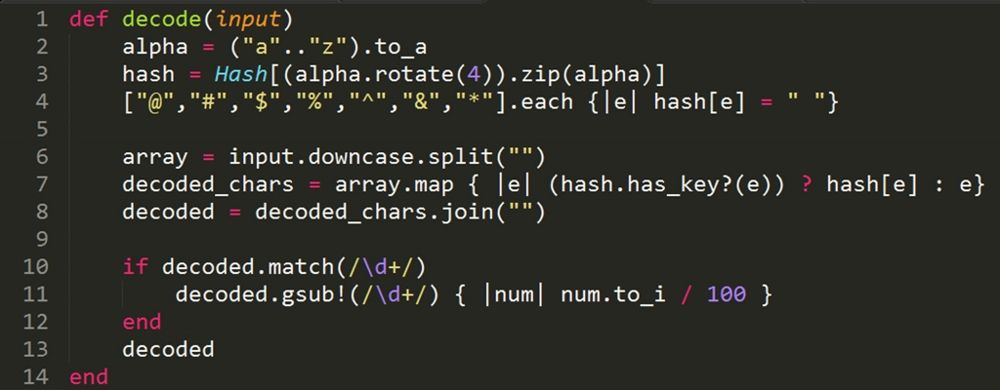

The .map Method
The .map method is a method in that can be called on an array to create a new array with the modfications specified in the block. For example, if you wanted to make an identical copy of an array, you could do newarray = array.map{|e| e}, where e represents a single element in the array. This would essentially make a clone of the original array, equivalent to newarray = array.clone. If you want to make a modification that applies to every element in the array, the map method is easier than iterating with a loop and adding each element one at a time to the new array in the block.
Let's look at an example. One of the challenges this week involved writing a method that could decipher a code, like this:
Essentially, we need to create a hash for which the values are the letters a-z and the keys are the same series of characters, offset by 4, like this:
ALPHA_CODE =
{"e"=>"a", "f"=>"b", "g"=>"c", "h"=>"d", "i"=>"e", "j"=>"f", "k"=>"g", "l"=>"h", "m"=>"i", "n"=>"j", "o"=>"k", "p"=>"l", "q"=>"m", "r"=>"n", "s"=>"o", "t"=>"p", "u"=>"q", "v"=>"r", "w"=>"s", "x"=>"t", "y"=>"u", "z"=>"v", "a"=>"w", "b"=>"x", "c"=>"y", "d"=>"z"}
["@","#","$","%","^","&","*"].each {|e| ALPHA_CODE[e] = " "}
The additional symbols added to the hash are keys for which all values will be a space.
The decode method takes a string as input. The string is then split into an array of characters using the .split method.
The .map method is the piece where the actual translating of the input occurs. For each element (character) e, the boolean method hash.has_key?(e) checks to see if the hash actually has a key the matches the character being iterated over. If it does, the value of that key (which is represented by hash[e]) is added to the decoded array. If the that key does not exist (such as would be the case if the character is a digit rather than a letter), the element itself is added to the array.
The array is then converted back into a string with the .join method. As a final step, if the string contants any digits, the integer value of that number is divided by 100 and replaced within the string.
The .map method is extremely convenient and concise in this case, replacing most of the if statements within the original code. It even allows for different modifications of the given element based on the condition (whether or not the key exists in the hash). The .map method can be used to replace .each in many cases that require changing all elements in an array. The method can also be used on ranges and other types within the Enumerable class.